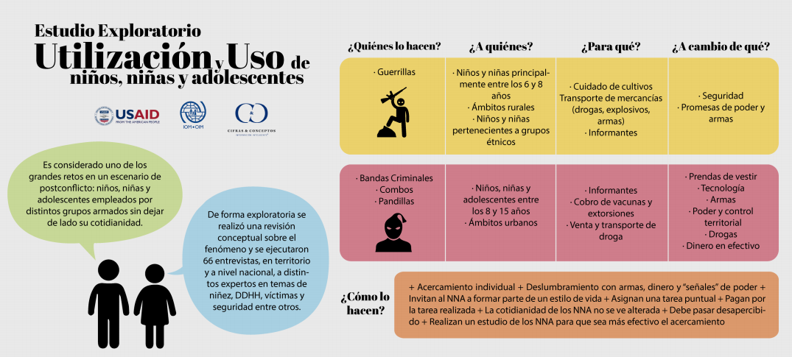
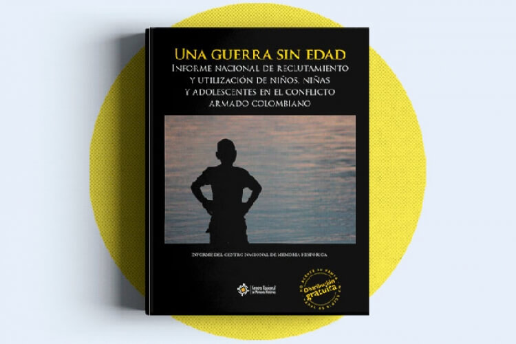
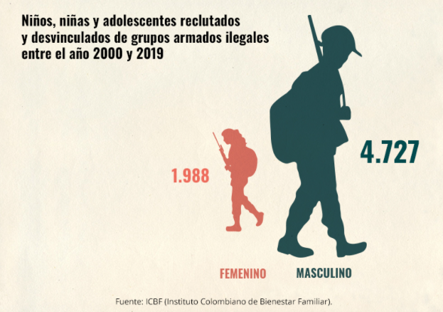

Introducción.
En la antiguedad cuando los conflictos no contaban con suficiente personal para los grupos armados se recurría a la población infantil y juvenil. Incluso para la conformación
de estos grupos se in-centivaron los nacimientos de niños como a una capacitación en defen-sa y en armas para menores. En el siglo XIX se empezó a reglamentar la guerra en el uso de la fuerza, de métodos y medios
y el impacto en las personas que no participan en los conflictos armados , entre muchas otras prácticas de legitimación.
Existen instrumentos internacionales y nacionales que son relevantes y deben ser tenidos en
cuenta por las autoridades administrativas y judiciales nacionales encargadas de la protección de los niños, niñas y adolescentes (NNA), además de gozar de los derechos inherentes
a las personas sin distinción alguna de sexo, raza o religión, ostentan los derechos que corresponden a los migrantes, y los derechos reconocidos a NNA menores de 18 años de edad.
NNA se encuentran
catalogados como poblaciones vulnerables y con frecuencia en situaciones de riesgo. De hecho, se trata del único grupo reconocido a nivel mundial como intrínsecamente vulnerable. Por esta condición
son tenidos como sujetos de derecho prevalecientes para el derecho internacional y nacional. Como migrantes, los NNA son aún más vulnerables, ya que enfrentan inseguridades, riesgos y peligros inherentes
al proceso migratorio, además, suelen ser objeto de violencia, robo y explotación. Las vulnerabilidades se acrecientan en aquellos que se encuentran en situación de pobreza, sin experiencia o indocumentados;
igualmente, en aquellos que están separados de sus familias o que son desplazados internos; asimismo en quienes no están en la escuela (ya sea debido a la
denegación del acceso a la educación o porque
no pueden asistir por la presión familiar para contribuir económica y laboralmente a los ingresos del hogar “trabajo infantil”) y en los NNA migrantes involucrados en explotación o utilización en la industria
del sexo.
Conforme a lo anterior, estos NNA, merecen una protección especial, lo que significa un mayor nivel de amparo, sobre todo en casos de indefensión o riesgo. Esto implica la necesidad de esfuerzos
legales, políticos y administrativos de los Estados para garantizar, sin excepción, el amparo y el goce efectivo de los derechos de los NNA. En concreto, deben estar bajo una protección integral, que implica
su reconocimiento como sujetos de derecho, así como su garantía y el cumplimiento; la prevención de la amenaza o vulneración de los derechos y, el restablecimiento inmediato una vez vulnerados. El Estado
tiene la responsabilidad y la autoridad para asegurar el goce efectivo de los derechos y para brindar protección integral a todos los NNA dentro de su territorio, sin discriminación, e independientemente
de
su nacionalidad o estatus migratorio. Vale la pena mencionar el importante papel de corresponsabilidad que juegan el Estado, la familia y la sociedad para proporcionar una protección integral a los NNA.

La normas penales previstas en los artículos 14 de la Ley 418 de 1997 y 162 de la Ley 599 de 2000, lejos de controvertir los preceptos internacionales en la materia, aseguran la penalización de las conductas proscritas por la comunidad internacional frente al reclutamiento y utilización de menores en los conflictos armados. De hecho aunque los tipos penales no son idénticos a los previstos en el DIH o en DPI, -como no lo son ellos entre sí-, es claro que las conductas que tales disposiciones internacionales pretenden evitar en el concierto del conflicto armado, están previstas en el derecho penal interno. Esta conclusión e interpretación se ve reforzada, con el principio de integración de las normas internacionales de derechos humanos que se encuentra previsto en el artículo 2º del Código Penal actual, por lo que se concluye que ninguna de las normas demandadas adolece de una omisión legislativa relativa violatoria de la Constitución o del bloque de constitucionalidad.
En el Derecho Internacional de los Derechos Humanos, el Derecho Internacional Humanitario y el Derecho Penal Internacional se establecen directrices que constituyen un importante marco normativo a nivel internacional, que prohíbe el reclutamiento y vinculación de niños y niñas tanto en los grupos armados irregulares como en la fuerza pública de los Estados. Para el caso de Colombia, la Convención sobre los Derechos del Niño, el Protocolo Facultativo de la Convención sobre los Derechos del Niño relativo a la participación de niños en conflictos armados y el Convenio 182 de la OIT relativo a las peores formas de trabajo infantil (Ley 704 de 2001) resultan ser instrumentos internacionales de derechos humanos ratificados por nuestro país, que forman parte del Derecho Interno y que incorporan obligaciones para los Estados Parte relacionadas con asegurar la protección de los menores en situación de conflicto armado. Estos instrumentos que forman parte del bloque de constitucionalidad, son disposiciones que garantizan la aplicación de medidas de protección a los niños y niñas menores de 18 años vinculados a los conflictos armados y la adopción por parte del Estado, de disposiciones internas que aseguren el cumplimiento de los compromisos adquiridos en esas normas internacionales vinculantes, en las que se consagra la obligación para los Estados de: (i) Abstenerse de reclutar obligatoriamente en las fuerzas armadas a menores de 18 años salvo el caso del reclutamiento voluntario de personas por debajo de esa edad en el caso de las fuerzas armadas del Estado, bajo la premisa de la presentación de salvaguardias debidas; (ii) prohíbe sin excepción a los grupos armados irregulares, reclutar o utilizar en hostilidades a menores de 18 años y se propone a los Estados adoptar para el efecto, las medidas posibles para impedir ese reclutamiento y utilización, incluyendo la adopción de las medidas legales necesarias para prohibir y tipificar esas prácticas; (iii) consagra como una de las peores formas de trabajo infantil, el reclutamiento forzoso u obligatorio de niños para utilizarlos en conflictos armados, por lo que se estimula a los Estados, a tomar acciones prioritarias para el efecto (Convenio 182 OIT).
El derecho internacional humanitario no es otra cosa que la codificación del núcleo inderogable de normas mínimas de humanidad que rigen en los conflictos armados y que como tales constituyen un valioso instrumento jurídico para lograr la efectividad plena del principio de la dignidad humana aún en las más difíciles y hostiles circunstancias, y sus disposiciones se aplican independientemente de si los países se han comprometido o no jurídicamente en la adopción de tales disposiciones, por tratarse de prácticas consuetudinarias de carácter imperativo que responden a presupuestos éticos mínimos y exigibles a todas las partes del conflicto, se trate de un conflicto nacional o internacional.
Los niños y las niñas en los conflictos armados se encuentran protegidos por el DIH desde una doble perspectiva: (i) en su calidad de civiles afectados por las hostilidades y (ii) como sujetos vinculados a ellas en conflictos armados internacionales y no internacionales, de acuerdo con los artículo 77 del Protocolo I y al artículo 4º del Protocolo II adicionales a los Convenios de Ginebra, respectivamente, siendo el reclutamiento y la participación de menores de 15 años de edad en los conflictos armados, una conducta prohibida por el DIH. Los Estados Parte se comprometen a tomar todas las medidas legislativas necesarias para sancionar a las personas culpables de infracciones graves contra esos Convenios y se obligan a enjuiciar a las personas sospechosas de haber cometido infracciones graves contra esos tratados o a transferirlos a otro Estado para que los enjuicie, siendo de resaltar que la distinción que las normas del DIH hacen entre niños y adolescentes en lo que respecta al marco de protección particular a los menores de 15 años reclutados o utilizados en el conflicto, no desvirtuaba la prevalencia de los derechos de los menores de 18 años en el ordenamiento interno, dado que el esquema de protección constitucional colombiano cobija a todos los individuos que se encuentran en esa franja cronológica.
Colombia hace parte del grupo de países que ha ratificado el Estatuto de Roma que dio origen a la Corte Penal Internacional, institución de carácter permanente y con funciones judiciales, que tiene como propósito determinar la responsabilidad penal individual de las personas que hayan cometido graves violaciones a los Derechos Humanos y al Derecho Internacional Humanitario, por lo que puede investigar y enjuiciar los crímenes de genocidio, de lesa humanidad, de guerra y el de agresión, cuando los Estados Parte no hayan cumplido con su deber de perseguir, juzgar y castigar a los responsables de dichos crímenes dentro de sus respectivas jurisdicciones. El Estatuto de Roma en sí mismo considerado, es una norma convencional de derecho internacional que obliga exclusivamente a los Estados Firmantes, razón por la que sus disposiciones genéricas no pueden considerarse a priori ius cogens, ya que en sentido lógico, las normas exclusivamente convencionales para los Estados no pueden considerarse universalmente imperativas. Sin embargo, tipos penales incluidos en el Estatuto de Roma sí presentan tal condición, como ocurre por ejemplo con el delito de genocidio. El Estatuto de Roma en su artículo 8 tipifica, entre los crímenes de guerra que implican responsabilidad penal internacional para los individuos que lo cometen, el reclutar, alistar o utilizar menores de 15 años en las hostilidades, y si bien en el Derecho Penal Internacional la conducta objeto de reproche internacional, por ser contraria al DIH, es investigable y enjuiciable por la Corte Penal Internacional por estar tipificada en el Estatuto de Roma, siendo este Tribunal, competente para determinar la responsabilidad penal individual de cualquier ciudadano de cualquier País Parte en el que se cometan tales actuaciones ilícitas, su papel no es el de reemplazar la jurisdicción penal nacional, sino que su competencia en estas materias es residual. Por consiguiente, únicamente puede actuar en los casos en que las jurisdicciones nacionales se hayan abstenido por cualquier causa, de perseguir estos delitos o no hayan podido hacerlo por cualquier razón.
Los niños y su tratamiento como sujetos de especial protección reforzada en el derecho interno colombiano en el marco de la implementación del Acuerdo de Paz con las FARC-EP El reclutamiento forzado de los niños y su tratamiento en las normas internasEl
reconocimiento de los niños como sujetos de derecho y su especial protección tuvieron una importante manifestación en Colombia a través de la expedición del Decreto 2737 de 1989, denominado Código
del Menor, cuyo paradigma para el trato de los derechos de los niños era el de la protección. Entre las situaciones irregulares que contenía dicha normativa no estaba el que los niños
hubiesen sido reclutados de manera forzosa o voluntaria por los grupos ilegales. Aunque el enfoque de protección al menor era identificable en las anteriores legislación y Constitución [1886], su
alcance fue hondamente cuestionado a la luz de la Convención sobre los Derechos del Niño de 1989, frente a la cual la Constitución de 1886 presentaba fallas. En este sentido, el Comité para los Derechos
del Niño de las Naciones Unidas manifestó en varias ocasiones al Estado colombiano su preocupación por la falta de adecuación de la normatividad nacional a los principios y disposiciones de la Convención
en cuanto a la garantía y el respeto a la aplicación de los Derechos Humanos del menor dentro del orden de Derecho Público Interno, de cara al sistema constitucional. El proceso de reforma en Colombia
fue muy dispendioso y duró muchos años. En efecto, varias iniciativas fracasaron en el Congreso de la República. Pero, finalmente, una iniciativa conjunta de entidades del gobierno, el Ministerio
Público, el Sistema de las Naciones Unidas y organizaciones no gubernamentales nacionales e internacionales reunidos en la Alianza por la Niñez y un grupo de legisladores establecieron un espacio
de trabajo permanente que duró más de tres años y cuyo fruto fue el actual Código de la Infancia y la Adolescencia (CIA), expedido mediante la Ley 1098 de 2006. El reconocimiento de los niños como
víctimas del reclutamiento forzado en Colombia solo se hace visible con la expedición de la Ley 418 de 1997, que estableció el delito de reclutamiento ilícito. Rezaba el artículo 14:
“quien reclute a menores de edad para integrar grupos insurgentes o grupos de autodefensa, o los induzca a integrarlos, o los admita en ellos, o quienes con tal fin les proporcione entrenamiento
militar, será sancionado con prisión de tres a cinco años”. Este artículo fue modificado por el artículo 5 de la Ley 1421 de 2010 que, además de las sanciones penales para quienes sean condenados
por reclutamiento ilícito de menores de edad, señaló que estos no podrán ser acreedores de los beneficios jurídicos consagrados en la misma Ley.La Ley 548 de 1999 prorrogó la vigencia de la Ley 418
de 1997, como un esfuerzo encaminado a proteger a niños, niñas y adolescentes de la participación o reclutamiento por parte de las diversas instancias que conforman la fuerza pública colombiana.
Esta ley prohibió, entre otras, el servicio militar y el reclutamiento de personas menores de 18 años a las fuerzas militares. Lo anterior, sin importar por ejemplo que la voluntad del adolescente
y la de sus padres se mostrara a favor de la incorporación de la persona menor de 18 años a la fuerza pública o se apelara al argumento según el cual los menores no eran destinados a zonas con operaciones
de guerra o confrontaciones armadas, tal como lo preveía la Ley 418 de 1997. Colombia ratificó la Convención de los Derechos del Niño mediante la Ley 12 de 1991, pero al momento de la ratificación
el Estado colombiano hizo una reserva sobre el contenido de dicho instrumento, en virtud de la cual debía entenderse que la edad mínima para que una persona pueda participar en las hostilidades del
conflicto armado es de 18 años. En ese sentido, sin perjuicio de la modificación que posteriormente fue introducida por el Protocolo Facultativo de la Convención sobre los Derechos del Niño relativo
a la participación de los niños en conflictos armados, la protección que el artículo 38 de la Convención sobre los Derechos del Niño dispensa en favor de los niños ante el riesgo de su participación
en un conflicto armado, debe entenderse en favor de todos los menores de 18 años en Colombia desde 1991. El Gobierno colombiano aprobó y ratificó los dos Protocolos Optativos de la Convención: la
Ley 765 de 2002, de 31 de julio, por medio de la cual se aprueba el Protocolo Facultativo de la Convención sobre los Derechos del Niño relativo a la venta de niños, la prostitución infantil y la
utilización de los niños en la pornografía, adoptado en Nueva York el veinticinco (25) de mayo de dos mil (2000); y la Ley 833 de 2003, de 10 de julio, por medio de la cual se aprueba el Protocolo
Facultativo de la Convención sobre los Derechos del Niño relativo a la participación de niños en los conflictos armados, aprobado en Nueva York el veinticinco (25) de mayo de dos mil (2000). Tras
esta disposición, el Ejército Nacional desmovilizó de sus filas a finales de 1999 a más de ochocientos menores de dieciocho años. Así mismo, a inicios de 2000, la Policía Nacional prohibió la incorporación
de menores de dieciocho años en sus propias filas. En el año 2000, mediante la Ley 599, se aprobó un nuevo Código Penal. En el título II del Libro II, relativo a los delitos contra personas y bienes
protegidos por el derecho internacional humanitario, el artículo 162 establece: “El que, con ocasión y en desarrollo de conflicto armado, reclute menores de dieciocho (18) años o los obligue a participar
directa o indirectamente en las hostilidades o en acciones armadas, incurrirá en prisión de seis (6) a diez (10) años y multa de seiscientos (600) a mil (1.000) salarios mínimos legales mensuales
vigentes (SMLMV). Esta pena fue aumentada con la Ley 890 de 2004, al pasar de ocho (8) a quince (15) años de prisión y la multa pasó de ochocientos (800) a mil quinientos (1.500) SMLMV.Colombia aprobó
el Estatuto de Roma de la Corte Penal Internacional mediante la Ley 742 de 2002 y, por tanto, el carácter de crimen de guerra del delito de reclutamiento; específicamente, el Estatuto señala el delito
de reclutar o alistar a niños menores de 15 años en las fuerzas armadas nacionales o utilizarlos para participar activamente en las hostilidades.Sin embargo, al momento de ratificar el Estatuto de
Roma, el Congreso lo hizo con la salvedad prevista en el artículo 124 de un período de siete años contados a partir de la fecha en que el Estatuto entró en vigor, o sea,
el 1 de noviembre de 2002, y no se aceptó la competencia de la Corte Penal Internacional sobre la categoría de crímenes de guerra, entre los cuales está el de reclutamiento. Por tanto, solo a partir
del 1 de noviembre de 2009 la Corte Penal Internacional tuvo plena jurisdicción para investigar y sancionar el reclutamiento de menores de 15 años en Colombia. En el informe Una guerra sin edad,
el CENTRO NACIONAL DE MEMORIA HISTÓRICA trae a colación que:En 2005 el Secretario General de las Naciones Unidas identificó seis graves violaciones que pueden ser cometidas en contra de niños y niñas en tiempos de guerra o en medio de un conflicto armado y, frente a las cuales los Estados tienen el deber de hacer monitoreo y reportar las acciones realizadas encaminadas a la protección de las personas menores de edad en riesgo o que han sido víctimas. Reclutamiento y uso de niños ha sido incluido junto con abduction en el grupo de las seis graves violaciones dentro de las cuales también hace parte la muerte y mutilación de niños; violencia sexual en contra de niños; ataque en contra de escuelas y hospitales y denegación del acceso de los niños a la ayuda humanitaria (Office of the Special Representative of the Secretary-General for Children and Armed Conflict, 2013, página 9). El Manual de monitoreo y mecanismos de reporte de graves violaciones en situaciones de conflicto armado (2010, página 11) de la ONU (Organización de las Naciones Unidas) plantea la definición abduction de la siguiente manera:La sustracción, detención, captura, aprehensión, toma o desaparición forzada ilegal de un niño, ya sea temporal o permanente para el propósito de cualquier explotación del niño —esto incluye, pero no se limita— al reclutamiento dentro de fuerzas o grupos armados, participación en hostilidades, explotación o abuso sexual, trabajo forzado, toma de rehenes, o adoctrinamiento. Si un niño es reclutado por la fuerza por una fuerza o grupo armado esto es considerado como dos violaciones separadas, ser secuestrado y reclutado. Estado de cosas inconstitucional por desplazamiento forzado y reclutamiento de menores de 18 añosLa
situación provocada por el conflicto armado interno había producido un fenómeno de desplazamiento forzado de altas magnitudes. En vista de ello, la Sentencia T-025-04 de la Corte Constitucional declara
que respecto de la población desplazada por la violencia existía un “estado de cosas inconstitucional como una falla estructural y/o una política pública del Estado”, pues era tal la magnitud de
la violación de los derechos humanos de dicha población, que más que una demanda contra una o varias entidades del Estado, se trataba de un problema estructural, derivado de graves falencias en la
actuación de un conjunto amplio de instituciones que forman parte de lo que la ley ha llamado el Sistema Nacional de Atención Integral a la Población Desplazada (SNAIPD). Además, la Corte precisó
que cuando el Estado omite sin justificación constitucionalmente aceptable tomar medidas frente a la marginación que sufren algunos miembros de la sociedad, y se verifica que la inhibición viola
un derecho constitucional fundamental, la función del juez será “no la de remplazar a los órganos del poder público incursos en la abstención, sino la ordenar el cumplimiento de los deberes del Estado”.
En el marco del seguimiento a ese Estado de Cosas por el desplazamiento forzado, en consideración a las investigaciones generadas por la Defensoría del Pueblo, la Corte Constitucional en el Auto
A251-08 se pronuncia sobre la “protección de los derechos fundamentales de los niños, niñas y adolescentes desplazados por el conflicto armado”, allí sostiene que los niños, niñas y adolescentes
desplazados por el conflicto armado son sujetos de protección constitucional imperativa y prioritaria, en virtud de los mandatos de la Carta Política y de las obligaciones internacionales del Estado
colombiano en materia de Derechos Humanos y Derecho Internacional Humanitario. El riesgo de reclutamiento forzoso de menores de edad por los grupos armados ilegales que participan en el conflicto
armado colombiano es reconocido en dicho auto como una ocurrencia extendida y reiterada en todo el territorio nacional. La Corte Constitucional admite que es un hecho comprobado que el reclutamiento
forzado de menores de edad —niños, niñas y adolescentes— es una práctica criminal en la que incurren en forma extensiva, sistemática y habitual los grupos armados ilegales que toman parte en el conflicto
armado en Colombia, tanto guerrillas como paramilitares. Así mismo, la Corte señala el reclutamiento forzado de menores como causa directa de desplazamiento forzado a través de cuatro mecanismos
causales distintos:el desplazamiento forzado de familias y comunidades enteras, ante el riesgo de que sus niños, niñas y adolescentes sean vinculados al conflicto armado, bien sea por amenazas recibidas
directamente contra la vida de los menores o de sus familias, por el peligro generalizado existente en una región determinada, o porque uno o más miembros de la familia o la comunidad ya han sido
reclutados y se quiere evitar que otros también lo sean;el desplazamiento forzado de las familias de los menores de edad efectivamente reclutados, puesto que el reclutamiento de un niño, niña o adolescente
implica una presión y persecución para sus parientes, por parte de los actores armados enfrentados;el desplazamiento forzado de las familias de los menores de edad que han sido reclutados pero han
desertado, para proteger sus vidas; yel desplazamiento forzado únicamente de los niños, niñas o adolescentes en riesgo, que son enviados o se trasladan a otros lugares para preservarlos o preservarse
del peligro de reclutamiento.La Corte sostiene que los niños, niñas y adolescentes desplazados por el conflicto armado son sujetos de protección constitucional imperativa y prioritaria, en virtud
de los mandatos de la Carta Política y de las obligaciones internacionales del Estado colombiano en materia de Derechos Humanos y Derecho Internacional Humanitario. Así, la Constitución Política
consagra:Artículo 44. Son derechos fundamentales de los niños: la vida, la integridad física, la salud y la seguridad social, la alimentación equilibrada, su nombre y nacionalidad, tener una familia y no ser separados de ella, el cuidado y amor, la educación y la cultura, la recreación y la libre expresión de su opinión. Serán protegidos contra toda forma de abandono, violencia física o moral, secuestro, venta, abuso sexual, explotación laboral o económica y trabajos riesgosos. Gozarán también de los demás derechos consagrados en la Constitución, en las leyes y en los tratados internacionales ratificados por Colombia. La familia, la sociedad y el Estado tienen la obligación de asistir y proteger al niño para garantizar su desarrollo armónico e integral y el ejercicio pleno de sus derechos. Cualquier persona puede exigir de la autoridad competente su cumplimiento y la sanción de los infractores. Los derechos de los niños prevalecen sobre los derechos de los demás. Con
relación a la edad, en el Auto A251-08 la Corte defiende que debe tenerse en cuenta que los adolescentes —quienes son de por sí titulares de los derechos de los niños por ser menores de 18 años—
también son beneficiarios de un mandato constitucional de protección especial, que se consagra en el artículo 45 superior:Artículo 45. El adolescente tiene derecho a la protección y a la formación integral. El Estado y la sociedad garantizan la participación activa de los jóvenes en los organismos públicos y privados que tengan a cargo la protección, educación y progreso de la juventud.La
Corte Constitucional además reconoce que el Estado de Cosas derivado del desplazamiento forzado infringe las obligaciones del Estado emanadas de los instrumentos internacionales, tales como la Declaración
Universal de Derechos Humanos (art. 25-2); la Declaración Americana de los Derechos y Deberes del Hombre que dispone que todo niño tenga derecho a “protección, cuidados y ayuda especiales” (art.
VII); el Pacto Internacional de Derechos Civiles y Políticos dispone que: “todo niño tiene derecho, sin discriminación alguna por motivo de raza, color, sexo, idioma, religión, origen nacional o
social, posición económica o nacimiento, a las medidas de protección que su condición de menor requiere, tanto por parte de su familia como de la sociedad y del Estado” (art. 24-1). La Convención
Americana sobre Derechos Humanos establece que: “todo niño tiene derecho a las medidas de protección que su condición de menor requiere por parte de su familia, de la sociedad y del Estado” (art.
19). El Protocolo adicional a la Convención Americana sobre Derechos Humanos, en materia de derechos económicos, sociales y culturales, Protocolo de San Salvador, dispone que: “todo niño sea cual
fuere su filiación tiene derecho a las medidas de protección que su condición de menor requiere por parte de su familia, de la sociedad y del Estado” (art. 16). Y concretamente la Convención sobre
los Derechos del Niño, que en términos generales establece que: “los Estados Partes respetarán los derechos enunciados en la presente Convención y asegurarán su aplicación a cada niño sujeto a su
jurisdicción, sin distinción alguna (…)” (art. 2-1); que “los Estados Partes se comprometen a asegurar al niño la protección y el cuidado que sean necesarios para su bienestar, teniendo en cuenta
los derechos y deberes de sus padres, tutores u otras personas responsables de él ante la ley y, con ese fin, tomarán todas las medidas legislativas y administrativas adecuadas” (art. 3-2), y que
“los Estados Partes adoptarán todas las medidas administrativas, legislativas y de otra índole para dar efectividad a los derechos reconocidos en la presente Convención (art. 4)”. Asimismo, hace
énfasis en que el Derecho Internacional Humanitario es claramente aplicable al conflicto armado interno colombiano y que obliga al Estado a proporcionar a los niños, niñas y adolescentes una especial
protección frente a las graves violaciones de sus derechos fundamentales derivadas de la confrontación, particularmente las que conlleva el desplazamiento forzado, conforme lo señala la Corte Constitucional
de Colombia en la Sentencia C-291-07. Así lo menciona el Protocolo II adicional a los Convenios de Ginebra de 1977, que incluye entre las “garantías fundamentales” de la que son titulares las personas
no combatientes, el que “se proporcionarán a los niños los cuidados y la ayuda que necesiten” (art. 4-3). La Convención sobre los Derechos del Niño también obliga al Estado colombiano a proteger
a los menores de edad afectados por el conflicto armado interno: el artículo 38-1 establece que: “los Estados Partes se comprometen a respetar y velar por que se respeten las normas del Derecho Internacional
Humanitario que les sean aplicables en los conflictos armados y que sean pertinentes para el niño”, y el artículo 38-2 dispone que “de conformidad con las obligaciones dimanadas del Derecho Internacional
Humanitario de proteger a la población civil durante los conflictos armados, los Estados Partes adoptarán todas las medidas posibles para asegurar la protección y el cuidado de los niños afectados
por un conflicto armado”. Resulta importante señalar que, por medio del mecanismo de la Resolución 1612, Colombia está siendo monitoreada frente a las violaciones contra los niños, niñas y adolescentes
enunciadas, a través del Consejo de Seguridad de las Naciones Unidas. En 2006 se aprobó la Ley 1098 de Infancia y Adolescencia, cuyo paradigma era el garantismo constitucional. Esta ley introdujo
diferentes mecanismos para la atención y prevención del reclutamiento forzado. El artículo 3 estableció que todas las personas menores de dieciocho años son sujetos titulares de derechos; el artículo
7 consagró el principio de protección integral de las personas menores de dieciocho años, específicamente señaló que se entiende por protección integral de los niños, niñas y adolescentes el reconocimiento
como sujetos de derechos, la garantía y cumplimiento de los mismos, la prevención de su amenaza o vulneración y la seguridad de su restablecimiento inmediato en desarrollo del principio del interés
superior. Y adicionó que la protección integral se materializa en el conjunto de políticas, planes, programas y acciones que se ejecuten en los ámbitos nacional, departamental, distrital y municipal
con la correspondiente asignación de recursos financieros, físicos y humanos.A su vez, el artículo 8 estableció que los derechos de los niños, niñas y adolescentes son universales, prevalentes e
interdependientes. La prevalencia se señaló en el artículo 9 en el que se dice que, en todo acto, decisión o medida administrativa, judicial o de cualquier naturaleza que deba adoptarse en relación
con los niños, las niñas y los adolescentes, prevalecerán los derechos de estos, en especial si existe conflicto entre sus derechos fundamentales con los de cualquier otra persona. Y se añade que,
en caso de conflicto entre dos o más disposiciones legales, administrativas o disciplinarias, se aplicará la norma más favorable al interés superior del niño, niña o adolescente.El artículo 10 determinó
la corresponsabilidad entendida como la concurrencia de actores y acciones conducentes a garantizar el ejercicio de los derechos de los niños, las niñas y los adolescentes. Se hace énfasis en que
la familia, la sociedad y el Estado son corresponsables en su atención, cuidado y protección. La norma señaló que, tanto la corresponsabilidad, como la concurrencia aplican en la relación que se
establece entre todos los sectores e instituciones del Estado. Y se hace la salvedad de que, pese a todo ello, las instituciones públicas o privadas obligadas a la prestación de servicios sociales
no podrán invocar el principio de la corresponsabilidad para negar la atención que demande la satisfacción de derechos fundamentales de niños, niñas y adolescentes.Cabe destacar que el artículo 20
señaló explícitamente que los niños, las niñas y los adolescentes serán protegidos contra el reclutamiento y la utilización de los niños por parte de los grupos armados organizados al margen de la
ley (numeral 7).

Uno de los hechos victimizantes del conflicto armado con alto índice de subregistro es el reclutamiento forzado de menores de edad. Entre las razones está el miedo que sienten las familias de las
víctimas de denunciar, por las amenazas que sobre ellos recae; el temor de las víctimas por el riesgo que corren sus vidas, razón por la que optan por el silencio; y la adaptación de algunos menores
a la vida en el grupo armado, por las necesidades que allí les satisfacen de comida, protección y salarios, lo que hace que no vean en el reclutamiento un delito.En consecuencia, el país carece de
cifras exactas sobre el número de menores que históricamente han sido reclutados. Sin embargo, el Registro Único de Víctimas establece que entre enero de 1985 y el 31 de diciembre de 2019 se han
reportado 8.075 víctimas de este flagelo y 8.648 eventos. Vale aclarar que un evento puede implicar a más de una víctima y que una persona puede ser víctima del mismo delito en más de una ocasión.Aunque
tras las cifras expuestas hay un importante subregistro, el país sí cuenta con el número de menores que han ingresado al Instituto Colombiano de Bienestar Familiar en condición de desvinculados de
grupos armados. Esta institución indica que entre 1999 y julio de 2019 fueron atendidos 6.715 niños, niñas y adolescentes. De esa cifra, el 70 por ciento son hombres y el 30 son mujeres.

Tú debes ser protegido contra el reclutamiento
Para lograr esa meta, el Estado debe alcanzar cuatro grandes objetivos:
1. Crear las herramientas necesarias para que seas protegido en tus espacios vitales, principalmente si vives en una zona con presencia de grupos armados que pueden reclutarte.
Para cumplirlo, el
Estado debe:
• Ver cuáles espacios o situaciones de la zona en la que vives amenazan la garantía de tus derechos. Por ejemplo, si en tu vereda hay zonas de cultivos ilícitos o si por tu municipio
pasan frecuentemente grupos armados ilegales.
• Evitar que seas involucrado en la pelea de grupos armados que luchan por controlar una determinada zona o una actividad como el comercio de drogas.
• Evitar que seas utilizado en enfrentamientos armados y otras actividades ilegales como la fabricación y ubicación de explosivos.
2. Prevenir y contrarrestar todas las
formas de violencia y explotación que la familia o la
comunidad utilicen contra los niños, niñas y adolescentes.
Para cumplirlo, el Estado debe:
• Evitar que alguna persona de tu familia,
tu escuela o tu comunidad te maltrate, ya sea física o psicológicamente.
• Protegerte contra el abuso, la explotación o cualquier otra forma de violencia sexual.
• Actuar en contra de la
explotación laboral y evitar que te involucren en cualquiera de las peores formas de trabajo infantil.
• Prevenir tu participación en pandillas, combos, parches y grupos delictivos
3. Asegurarse de que los servicios creados para la garantía de tus derechos sean adecuados, funcionen de manera efi ciente y estén a tu alcance. Es decir, que puedas acceder fácilmente a ellos.
Para
cumplirlo, el Estado debe:
• Buscar que las instituciones encargadas de protegerte y garantizar tus derechos actúen de manera coordinada.
• Garantizar que los servicios que te ofrecen estas
instituciones sean los adecuados, tengan la sufi ciente capacidad para atenderte y actúen cuando los necesites.
• Buscar que los recursos destinados a la niñez se utilicen de acuerdo con las
necesidades de los niños y las niñas de tu municipio o departamento.
• Hacer que todos sepan cómo denunciar y castigar a los responsables del reclutamiento de niños, niñas y adolescentes.
4. Hacer que en tu hogar, como en los demás espacios de tu comunidad, odos y todas te reconozcan como un verdadero sujeto de derechos.
Para cumplirlo, el Estado debe:
• Buscar que todos los integrantes
de tu familia, de tu comunidad y de las instituciones del Estado reconozcan el reclutamiento y utilización de niños, niñas y adolescentes como un delito y una violación a los Derechos Humanos.
•
Trabajar para que todos y todas sepan que eres un sujeto de derechos, conozcan cuáles son esos derechos, los respeten y contribuyan a garantizarlos.
• Asegurarse de que todos y todas sepan cómo
denunciar la vulneración de tus derechos en cualquier caso.